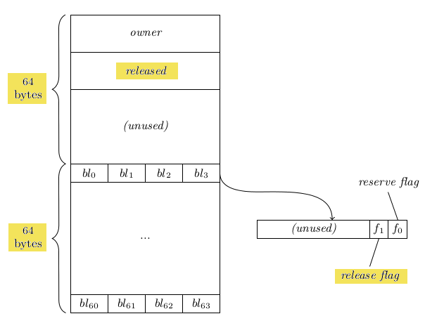

Gaurav Jain and Patrick Lam
University of Waterloo
December 2, 2013
{
process(n4);
}implies the following operations:
{
READ head
READ n1.next
READ n2.next
READ n3.next
process(n4)
}Let's add atomic blocks...
... and throw in a TM_WRITE.
atomic {
TM_WRITE n1.next
} atomic {
TM_READ head
TM_READ n1.next
TM_READ n2.next
TM_READ n3.next
process(n4)
} Transactions guarantee isolation and serializability.
Two ways to implement transactions.
| Eager | Lazy | |
|---|---|---|
| TM_WRITE | write memory directly & | buffer the write |
| TM_READ | read memory directly | read memory indirectly |
| (using buffered values) |
atomic {
TM_WRITE n1.next
} atomic {
TM_READ head
TM_READ n1.next
TM_READ n2.next
TM_READ n3.next
process(n4)
} If TM_WRITE runs first, TM_READer must stall or abort.
We introduce the notions of reservations and releases.
Recall: a TM_WRITE locks out readers until it commits or aborts.
Implication: subsequent accesses need not go through runtime.
Reservations perform the lockout without an actual access.
Two types of reservations: write and read.
A write reservation locks out readers, without an actual write.
atomic {
TM_WRITE_RESERVE n1.next
n1.next = null
}
atomic {
TM_READ head
TM_READ n1.next # stall or abort
}
After a write reserve, a thread may directly write to memory.
Similarly, a read reservation prevents concurrent writes,
enabling direct reads.
atomic {
TM_READ_RESERVE head
x = head
...
y = head
}
Transactions may concurrently read reserve an address.
Writers must stall or abort.
Enable unmediated access to memory.
Path-sensitive compiler analyses can use reservations to optimize code.
As seen until now, reservations persist until commit or abort.
A release signals that a transaction is done with an address.
atomic {
{
Node n = TM_READ head->next
TM_READ_RESERVE n
# access n directly and repeatedly
TM_RELEASE n
# n goes out of scope
}
# more processing, but no more accesses to n
}
A transaction may regain access to an address after releasing it.
atomic {
Node n = TM_READ head->next
TM_READ_RESERVE n
# access n directly and repeatedly
TM_RELEASE n
# ...
TM_READ_RESERVE n
}If another transaction reserved the address meanwhile,
re-reader must abort.
int a, b, c, d;
int bar(int& x) {
return TM_READ(&x)+1;
}
int foo() {
TM_WRITE(&a, 2);
TM_WRITE(&b, 2);
if (TM_READ(&d) >= 0) {
TM_WRITE(&b, TM_READ(&c) +
TM_READ(&d));
} else {
TM_WRITE(&a, bar(b));
}
return TM_READ(&a) + TM_READ(&b);
} int a, b, c, d;
int bar(int& x) { return x+1; }
int foo() {
TM_WRITE_RESERVE(&a);
TM_WRITE_RESERVE(&b);
bool release = TM_READ_RESERVE(&d);
if (d > 0) {
a = 2;
b = TM_READ_RELEASE(&c) + d;
} else {
b = 2; a = bar(b);
}
if (release)
TM_RELEASE(&d);
return a + b; }Motivating observation:
Our Goal: minimize writer lock-out.
Reserves and releases, together, allow temporary privatization of memory.
Mechanism: commit-time validation and reader aborts.
A transaction can write to an address only if there are no active read reservations on an address.
If a transaction tries to write to a released address, writer commit only succeeds after all released readers have completed.
Writer ensures ordering by stalling until all readers commit or abort; or by aborting and rolling back
When a reader tries to re-read a previously read (and released) address, it must request a new reservation.
If the address has been subsequently write reserved, reader must abort.
Our novel API enable compilers to emit better code, using
Consider:
TM_WRITE_RESERVE(A)
# ...
TM_READ_RESERVE(B)Write reservation of A always precedes reservation of B.
Bonus: no need for undo log tracking.
Reserve dependency optimization improved benchmark results.
Consider:
# x already contains 5
TM_WRITE(x, 5);In this case, a read reservation suffices.
Our reserve API thus enables more concurrent access to x.
Reservations and releases require extensions
to underlying lock implementation.
We extended TLRW (implemented by RSTM).
Lock implementation: byte-locks.
(eager byte-locks, encounter-time locking upon access, free upon commit.)
We redesigned bytelocks for our 64-hardware-thread system.
(also, no unslotted threads)
Per-thread reserve & release flags indicate active readers.
Reserve: thread is active, may perform privatized access.
Release: thread no longer active, but not yet committed.
Writer uses per-lock released field to indicate acquisition.
If you have a writer lock,
no other transaction may read or write to that address.
Hence, you may freely modify that address
without additional instrumentation.
Once you hold a reader lock,
contents are guaranteed to not change.
You may freely read locked address
without additional instrumentation.
You must hold active reader lock.
Set your release flag, clear your reserve flag.
Initial work on STM [ST95] contained a notion of reservations:
must declare all accessed addresses upon transaction entry.
Such a notion was impractical for dynamic data structures.
Our notion is dynamic and applies to an eager system.
Notion of “lock first, access later” appears in [HP+96], [SA+06].
Our work focusses on eager STM & uninstrumented accesses.
Also, we make stronger privatization guarantees at reservations.
Early releases first appeared in DSTM [HL+03].
Idea: remove addresses from the read set of a transaction.
These releases were manually inserted; domain knowledge ensured safety.
e.g.: release parent nodes in a tree traversal.
No commit-time validation needed in DSTM.
RR-TM releases could be mechanically applied,
in tandem with reservations.
Applicable to any read; a transaction may re-reserve an address.
Requires commit-time validation.
Originally from lock-based concurrency control.
Our contribution:
explicit, domain-knowledge-free privatization through reservations and releases.